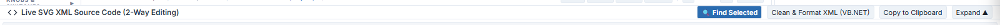
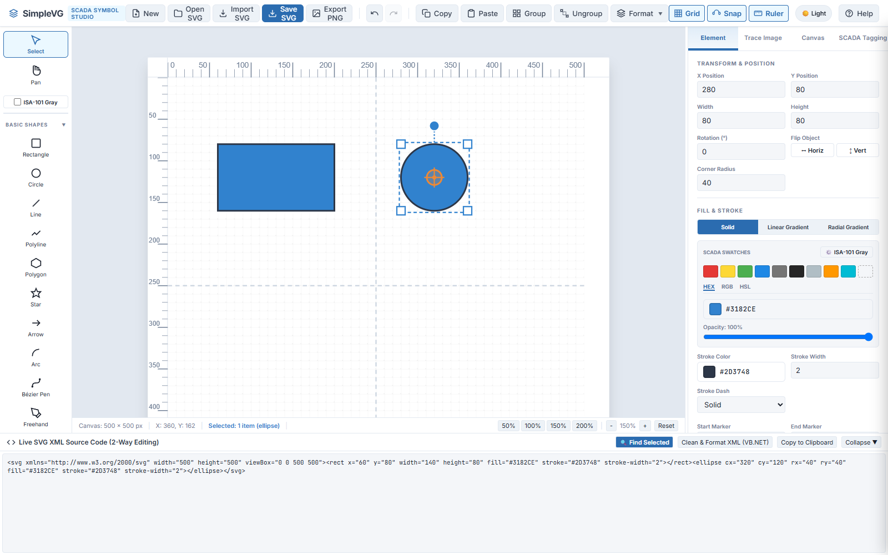
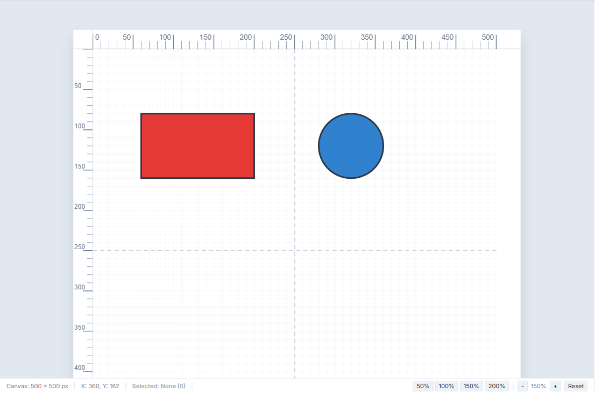
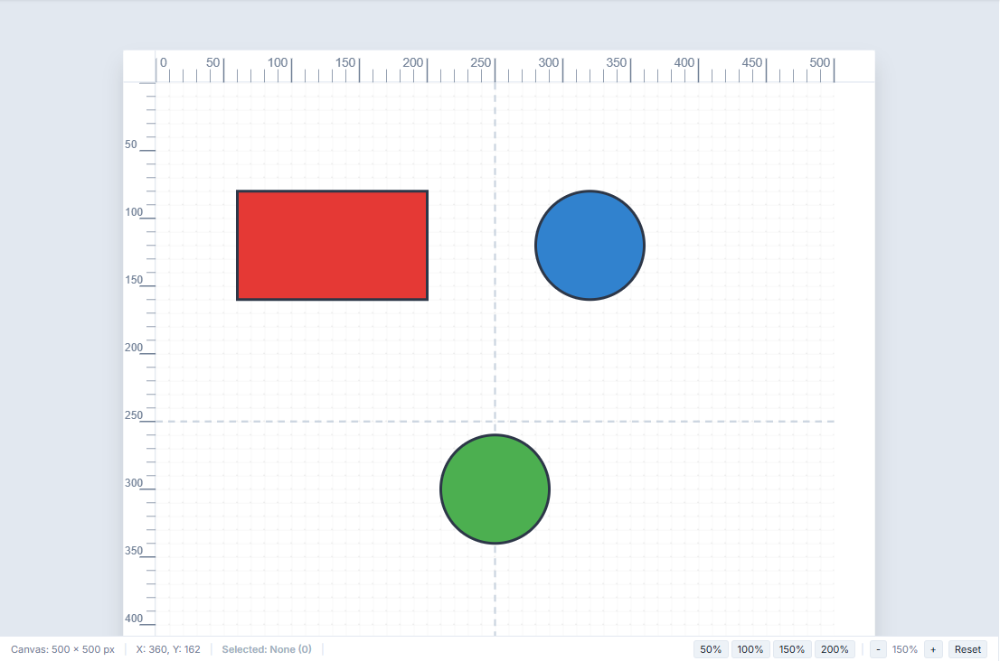
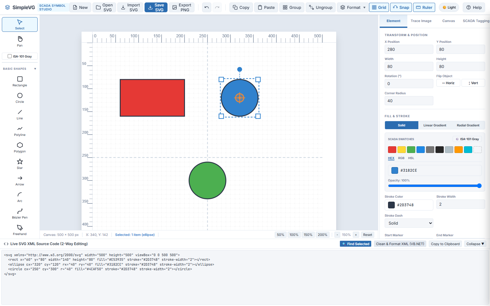

SimpleVG › Tutorial › Chapter 11
This is an advanced chapter. You never need the code to use SimpleVG, but being able to read and change it is a real strength: it lets you make exact edits, fix things the Inspector cannot reach, and see precisely what a SCADA system will be given.
Draw a rectangle and an ellipse, as in the earlier chapters. Along the very bottom of the window is a bar titled Live SVG XML Source Code (2-Way Editing).

Click Expand to open it. The same button now reads Collapse.

The drawer shows the drawing as an SVG document. For our two shapes it looks like this:
<svg xmlns="http://www.w3.org/2000/svg" width="500" height="500" viewBox="0 0 500 500">
<rect x="60" y="80" width="140" height="80" fill="#3182CE" stroke="#2D3748" stroke-width="2"></rect>
<ellipse cx="320" cy="120" rx="40" ry="40" fill="#3182CE" stroke="#2D3748" stroke-width="2"></ellipse>
</svg><svg> is the canvas. Its width, height and viewBox match the canvas size from the Canvas tab.<rect>, <ellipse>, <line>, <polygon>, <path>, <text> and so on. The Circle tool writes an <ellipse>.x and y for position, width and height for size, fill and stroke for colour. An ellipse is described by its centre (cx, cy) and radii (rx, ry).<g> element with its parts nested inside, and it carries the id, class and data-tag from Chapter 10.Only your artwork is shown. The grid, rulers, selection handles and any reference image from Chapter 9 are part of the editor, not of the drawing.
The drawer works in both directions. Draw on the canvas and the code updates. Type in the code and the canvas updates, about half a second after you stop typing.
Try it. Click in the code, find fill="#3182CE" on the rectangle and change it to fill="#E53935". The rectangle turns red.

You can add whole shapes too. Just before the closing </svg>, type:
<circle cx="250" cy="300" r="40" fill="#4CAF50" stroke="#2D3748" stroke-width="2"></circle>A green circle appears below the other two.

While you type, the code is often temporarily broken: a missing quote, a half-written tag. SimpleVG simply waits. The canvas keeps showing the last version that was valid, and updates again as soon as your code is well-formed. Nothing is lost by pausing mid-edit.
In a big drawing it is hard to know which lines of code belong to which shape. Select a shape on the canvas, then click Find Selected (or press Ctrl+Shift+F). The drawer opens if it was closed, highlights the code for that shape and scrolls it into the middle of the view.
It looks for the element’s id, data-tag or class first, and its type otherwise, so giving shapes ids (Chapter 10) makes them much easier to find.
The code arrives as a single long line. Click Clean & Format XML and SimpleVG tidies it, with one element per line and neat indentation.

The formatting is done by SimpleVG’s own server, so the app must be running for this button to work. It changes only the layout of the text, not the drawing.
Copy to Clipboard copies the whole code in one click. It is handy for pasting into another editor, a document or a bug report, or into a SCADA project that takes SVG as text.
That completes the SimpleVG tutorial. You can now draw, place and restyle symbols, arrange and trace, tag shapes, and work with the SVG itself. The built-in help (F1) has the full reference for everything you have seen.